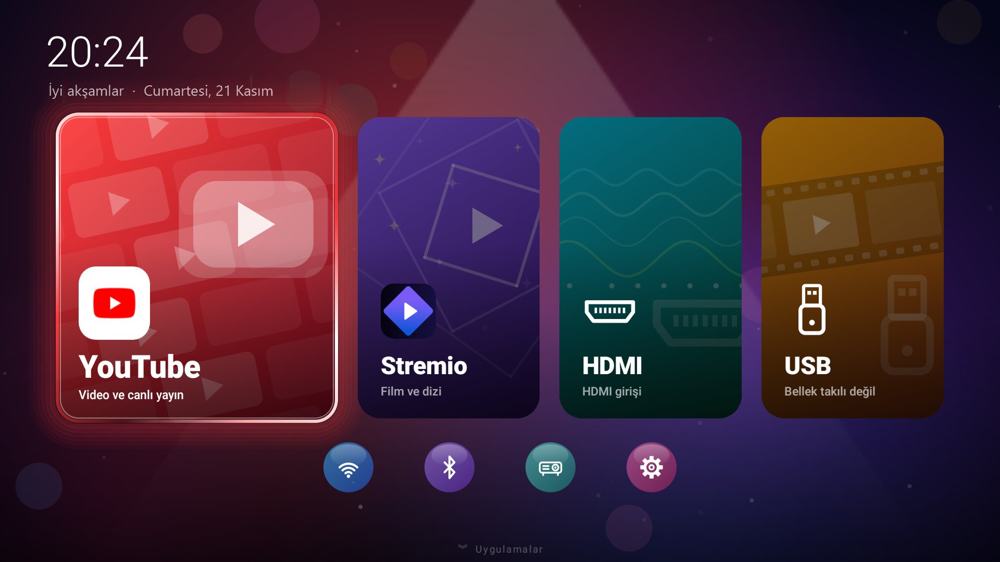
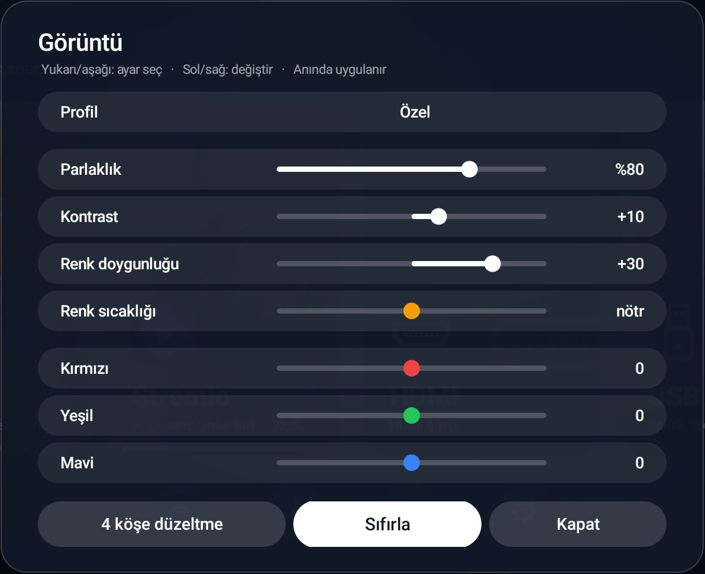

Projeksiyon için sade, sessiz ve hızlı ana ekran.A clean, silent and fast home screen for your projector.
HY350 için yazıldı: dört büyük panel, kendi Wi-Fi ve Bluetooth ekranları, görüntü ayarları ve 4 köşe düzeltme — hepsi kumandayla.
Written for the HY350: four big panels, its own Wi-Fi and Bluetooth screens, picture settings and 4-corner correction, all from the remote.

Projeksiyonun ana ekranı olması gerektiği gibi.
The home screen a projector deserves.
Üreticinin kalabalık arayüzü yerine, uzaktan ve kumandayla rahat kullanılan sade bir ekran.
Instead of the crowded stock interface, a plain screen that is easy to use from across the room with a remote.
Dört büyük panel
Four big panels
YouTube, Stremio, HDMI, USB. Her panelin kendi canlı sahnesi var.
YouTube, Stremio, HDMI, USB. Each panel has its own live scene.
Kaldığın yerden devam
Continue where you left off
Son izlediğin videonun kapağı, adı ve ilerlemesi panelde görünür.
The cover, title and progress of the last video you watched show up right on the panel.
Wi-Fi ve Bluetooth
Wi-Fi and Bluetooth
Ağ seç, şifreyle bağlan; hoparlör ya da kulaklığı eşleştir ve bağla. Üreticinin mavi ekranları yok.
Pick a network and connect with a password; pair and connect a speaker or headphones. No more of the manufacturer's blue screens.
Görüntü ayarları
Picture settings
Parlaklık, kontrast, renk doygunluğu, renk sıcaklığı ve kırmızı/yeşil/mavi dengesi. Hazır profiller de var; ayar anında uygulanır.
Brightness, contrast, colour saturation, colour temperature and red/green/blue balance, plus ready-made profiles. Changes apply instantly.
- Sinema
- Sıcak
- Soğuk
- Canlı
- Göz dostu
4 köşe düzeltme
4-corner correction
Kumandanın ok tuşlarıyla, üreticinin yöntemiyle.
With the remote's arrow keys, using the manufacturer's own method.
Sessiz ve serin
Silent and cool
Arayüz sesi yok. Boştayken animasyonlar durur; kare hızı 30'un altına düşerse efektler kendiliğinden hafifler. Projeksiyon ısınmaz, fan gereksiz yere hızlanmaz.
No interface sounds. Animations stop when idle, and if the frame rate drops below 30 the effects lighten up on their own. Less heat, no needless fan noise.

Odayı değil, görüntüyü ayarla.
Tune the picture, not the room.
Parlaklıktan renk dengesine kadar her ayar tek ekranda, kumandayla. Hazır profillerden birini seç ya da kendin ince ayar yap.
Everything from brightness to colour balance on one screen, by remote. Pick a ready-made profile or fine-tune it yourself.
- Anında uygulanır: değer değişince görüntü hemen değişir.
- Applies instantly: the picture changes as soon as you change a value.
- Hazır profiller: Sinema, Sıcak, Soğuk, Canlı, Göz dostu.
- Ready-made profiles: Cinema, Warm, Cool, Vivid, Eye-friendly.
Ayrıca: temalar, uyku zamanlayıcısı, gece modu, USB bellek takılınca VLC ile açma, HDMI kablo algılama.
Also: themes, a sleep timer, night mode, opening a USB stick in VLC when you plug it in, and HDMI cable detection.
Uyumluluk
Compatibility
Perde, Wi-Fi/Bluetooth bağlantısı, 4 köşe ve renk ayarı için sistem uygulaması olarak imzalıdır (Android'in herkese açık AOSP test anahtarıyla). Bu yüzden yalnızca bu anahtarla üretilmiş cihazlara kurulur — HY350 bunlardan biri. Uyumsuz cihazda kurulum INSTALL_FAILED_SHARED_USER_INCOMPATIBLE hatasıyla reddedilir, cihaza bir şey olmaz. Arayüz Türkçedir.
To reach Wi-Fi/Bluetooth, 4-corner and colour settings, Perde is signed as a system app (with Android's public AOSP test key). So it only installs on devices built with that key — the HY350 is one of them. On an incompatible device the install is rejected with INSTALL_FAILED_SHARED_USER_INCOMPATIBLE and nothing happens to the device. The interface is in Turkish.
Üç adımda ana ekran olsun.
Make it your home screen in three steps.
Kurulum bilgisayardan ADB ile yapılır. Telefon ya da projeksiyondan Play Store gerekmez.
Installation is done from a computer with ADB. No Play Store needed on the projector.
ADB'yi hazırla
Get ADB ready
Projeksiyonda ağ üzerinden ADB'yi aç ve IP adresini öğren. Bilgisayara Android platform-tools kur.
Turn on network ADB on the projector and note its IP address. Install the Android platform-tools on your computer.
Bağlan ve kur
Connect and install
perde.apk dosyasını indirip şunları çalıştır:
Download perde.apk and run:
adb connect <ip>:5555
adb install perde.apk
Ana ekran yap
Set as home screen
Perde'yi varsayılan ana ekran olarak ata:
Set Perde as the default home screen:
adb shell cmd package set-home-activity com.perde.launcher/.MainActivity
İsteğe bağlı: kaldığın yerden devam
Optional: continue where you left off
Son izlediğin videoyu panelde göstermek için bildirim erişimi ver:
To show your last watched video on the panel, grant notification access:
adb shell cmd notification allow_listener com.perde.launcher/com.perde.launcher.MediaWatcher
Geri almak
Undo
Perde'yi kaldırınca eski ana ekran geri gelir:
Uninstall Perde and the old home screen comes back:
adb uninstall com.perde.launcher
Gerekenler: HY350 (ya da AOSP test anahtarıyla üretilmiş bir Android TV cihazı) ve ADB'li bir bilgisayar. Ayrıntı için yukarıdaki uyumluluk notuna bak.
Requirements: an HY350 (or an Android TV device built with the AOSP test key) and a computer with ADB. See the compatibility note above.
Sık sorulanlar
Questions, answered
Ok tuşlarında tık sesi geliyorThe arrow keys make a click sound
Bu ses Perde'den değil, cihazın Android Klavyesinden gelir. Android Klavye Ayarları › Tercihler › "Tuşa basıldığında ses çıkar" seçeneğini kapatınca susar.
The sound doesn't come from Perde but from the device's Android Keyboard. Turn off Android Keyboard Settings › Preferences › "Sound on keypress" (the Turkish label is "Tuşa basıldığında ses çıkar") and it goes quiet.
Kurulum "INSTALL_FAILED_SHARED_USER_INCOMPATIBLE" hatası verdiThe install failed with "INSTALL_FAILED_SHARED_USER_INCOMPATIBLE"
Cihazın sistem imzası Perde'ninkiyle uyuşmuyor; Perde yalnızca AOSP test anahtarıyla üretilmiş cihazlara kurulur. Cihaza bir şey olmaz, kurulum yalnızca reddedilir.
The device's system signature doesn't match Perde's: it only installs on devices built with the AOSP test key. Nothing happens to the device; the install is simply refused.
Nasıl kaldırırım?How do I uninstall it?
Bilgisayardan adb uninstall com.perde.launcher çalıştır. Eski ana ekran geri gelir.
Run adb uninstall com.perde.launcher from your computer. The old home screen comes back.
Arayüz İngilizce mi?Is the interface in English?
Hayır, arayüz Türkçedir.
No. The interface is in Turkish.
Perdeyi aç.
Open the curtain.
Ücretsiz, açık kaynak, MIT lisanslı.
Free, open source, MIT licensed.